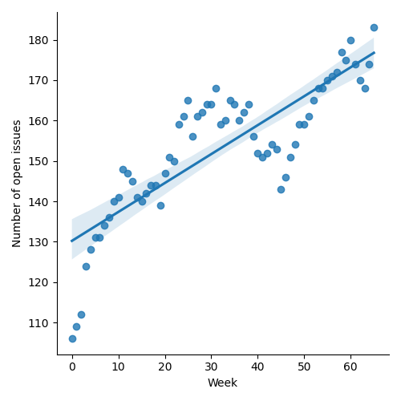
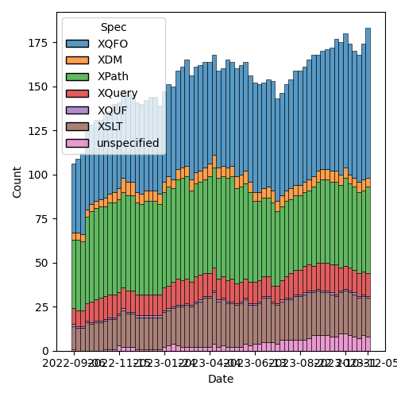
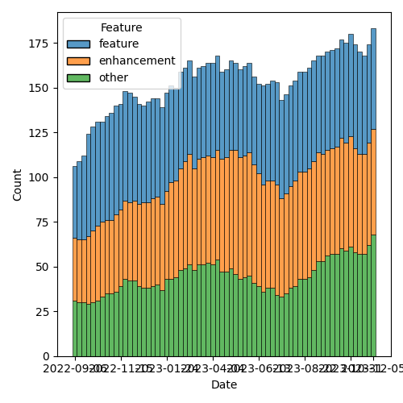

QT4 CG Meeting 058 Minutes 2023-12-12
Table of Contents
- Minutes
- Summary of new and continuing actions
[0/6] - 1. Administrivia
- 2. Technical Agenda
- 3. Any other business?
- 4. Adjourned
Agenda index / QT4CG.org / Dashboard / GH Issues / GH Pull Requests
Minutes
Approved at meeting 059 on 19 December 2023.
Summary of new and continuing actions [0/6]
[ ]QT4CG-052-02: NW to consider how to schedule an “editor’s meeting”[ ]QT4CG-052-06: MK to consider the editorial question of “promotion” for the symmetric relations.[ ]QT4CG-055-01: MK to clarify that the return type of the deep lookup operator is a flat sequence.[ ]QT4CG-056-04: MK to write a proposal for adding a select attribute to xsl:text[ ]QT4CG-058-01: MK to clarify infn:numeric-comparethat -0 and +0 are equal.[ ]QT4CG-058-02: MK to consider providing more advice about the pitfalls of mixing decimal and double when sorting
1. Administrivia
1.1. Roll call [11/11]
[X]Reece Dunn (RD)[X]Sasha Firsov (SF)[X]Christian Grün (CG)[X]Joel Kalvesmaki (JK) [:05-][X]Michael Kay (MK)[X]John Lumley (JL)[X]Dimitre Novatchev (DN)[X]Wendell Piez (WP)[X]Ed Porter (EP)[X]C. M. Sperberg-McQueen (MSM)[X]Norm Tovey-Walsh (NW). Scribe. Chair.
1.2. Accept the agenda
Proposal: Accept the agenda.
Accepted.
1.2.1. Status so far…

Figure 1: “Burn down” chart on open issues

Figure 2: Open issues by specification

Figure 3: Open issues by type
1.3. Approve minutes of the previous meeting
Proposal: Accept the minutes of the previous meeting.
Accepted.
1.4. Next meeting
The next meeting is scheduled for Tuesday, 19 December 2023.
Any regrets for the next meeting?
JL gives regrets.
We will take a holiday recess on 26 December and 2 January, 2024.
1.5. Review of open action items [4/8]
[ ]QT4CG-052-02: NW to consider how to schedule an “editor’s meeting”[X]QT4CG-052-05: MK to rename thehexBinary-equalfunction tobinary-equal?[ ]QT4CG-052-06: MK to consider the editorial question of “promotion” for the symmetric relations.[ ]QT4CG-055-01: MK to clarify that the return type of the deep lookup operator is a flat sequence.[ ]QT4CG-056-04: MK to write a proposal for adding a select attribute to xsl:text[X]QT4CG-057-01: CG to make a PR for changing items to subsequence in some functions.[X]QT4CG-057-02: CG to make the list of options in deep-equal alphabetical again[X]QT4CG-057-03: CG to attempt to clarify that the unordered option in deep-equal only applies to the top-level sequence
1.6. Review of open pull requests and issues
1.6.1. Blocked
The following PRs are open but have merge conflicts or comments which suggest they aren’t ready for action.
1.6.2. Merge without discussion
The following PRs are editorial, small, or otherwise appeared to be uncontroversial when the agenda was prepared. The chairs propose that these can be merged without discussion. If you think discussion is necessary, please say so.
- PR #884: 862 Add explanations and examples of implausible expressions
- PR #879: 844 New sequence functions: names
- PR #875: XQFO, chap. 9 minor edits
- PR #873: 865 Improve explanation of equality comparisons
- PR #870: 867 Explain defaults in function signatures
- PR #863: 742 Drop xsl:function-library declaration
- PR #849: 847 Allow uri-structure-record keys to have empty sequence values
- PR #798: 479: fn:deep-equal: Input order
Proposal: merge without discussion.
Approved.
1.6.3. XSLT focused
The following PRs appear to be candidates for a future XSLT-focused meeting.
- PR #871: Action qt4 cg 027 01 next match
These issues identify the XSLT-focused changes that have been made to the specifications but which have not been established by the community group as the status quo.
1.6.4. Substantive PRs
1.6.5. Proposed for V4.0
The following issues are labled “proposed for V4.0”.
- Issue #850: fn:parse-html: Finalization
- Issue #829: fn:boolean: EBV support for more item types
- Issue #716: Generators in XPath
- Issue #689: fn:stack-trace: keep or drop?
- Issue #583: array:replace(), etc
- Issue #557: fn:unparsed-binary: accessing and manipulating binary types
- Issue #340: fn:format-number: Specifying decimal format
- Issue #260: array:index-of
- Issue #33: json parsing number type option
- Issue #31: Extend FLWOR expressions to maps
2. Technical Agenda
2.1. PR #881: 866 Introduce and exploit new numeric-compare() function
See PR #881
MK introduces the PR.
- MK: We’ve done a fair bit to solve the transitivity problems of
things that depend on equals. We made a transitive function for maps
in 3.1; we’ve changed for-each and grouping to use that transitive
function. But we still have problesm with ordering comparisons, for
sorting especially.
- … This proposal handles sorting in XSLT and XQuery and things like min/max and highest/lowest.
- … The function is also exposed publicly for user convenience.
- MK: The changes are in functions, XSLT, and XQuery.
- MK reviews the
fn:numeric-comparefunction as described in F&O. - MK: Editorially, the min/max functions have changed a lot but the
technical changes are intended to be small.
- … Rather than having pseudo-code, which was problematic,we simply say in prose what the results must be.
- MK reviews the changes in XQuery
Order By- … And similar rules for XSTL
- DN: I think this is a good idea. I have a few questions; it says doubles are converted to arbitrary position decimals. I think that “arbitrary” is a little troubling.
- MK: Let’s check the detail on that…(MK returns to that part of the F&O spec)
- … The spec doesn’t actually say “arbitrary”.
Some review of what the actual prose in rule 5.
- DN: This is still problematic.
- MK: But the spec is clear about implementation limits.
- DN: I’m not sure that all
xs:doublevalues can be represented inxs:decimal. - MK: Yes, that’s true.
- DN: We should probably have some examples of groups of doubles that are the same in decimals.
- DN: It says that
NaNis equal to itself and less than everything else. In that case, isNaNless than negative infinity? It’s not symmetrical to positive infinity. - MK: I don’t see how you can make it symmetrical.
- … This defines the results of numeric compare, but some functions
like
minandmaxhandleNaNspecially. So these rules don’t apply.
- … This defines the results of numeric compare, but some functions
like
- DN: I’d be even happier few could have
-NaNand ~+NaN~… - MK: Yes, but those are in IEEE but we don’t support them.
- DN: Isn’t sorting when
NaNvalues are involved always unstable? - MK: That’s why, for sorting purposes, we treat
NaNas equal to itself. - MK: The only thing that’s actually changed here is how doubles and decimals are compared.
- CG: I’ve already given some feedback in the issue. One of my
concerns is that ordinary users might not want to differentiate
between
fn:compareandfn:numeric-compare.- … What I eventually did was create a new issue to generalize the
fn:comparefunction to take advantage offn:numeric-compare.
- … What I eventually did was create a new issue to generalize the
- MK: I think that a generalized
fn:comparehas both benefits and drawbacks. - CG: Should we make this function private if we have another function?
- MK: I just don’t like the fact that users will use
minwith two arguments to get the same results and that’s clumsy. - JK: Does anything need to be said in the rules or examples about
-0and its comparison with+0. - MK: That’s a good point…yes, it should say that negative and positive zero are equal.
ACTION: MK to clarify in fn:numeric-compare that -0 and +0 are equal.
- DN: I think that comparing double 0.1 to decimal 0.1 returns greater is quite confusing and users should never mix the types. That seems like a problem with this function.
- MK: It’s a problem with XQuery and XSLT as they exist already. We’re
not introducing this problem, we’re just trying to solve it. You are
allowed to mix them and it’s easy to do accidentally because
xs:untypedAtomicvalues arexs:doubleand you might mix them withxs:decimal- … This doesn’t solve all the problems, but it does fix the problems of transitivity that cause problems in things like sort.
- DN: Could we add a precision argument? That would eliminate surprises.
- MK: If you’re doing a sort, force everything to decimal. That’s a better solution.
- DN: This should be put in a note somewhere.
- MK: A lot of our users don’t understand the subtlties of floating point arthimetic.
ACTION: MK to consider providing more advice about the pitfalls of mixing decimal and double when sorting
- MSM: A simple statement of how many decimal places are needed to distinguish doubles and decimals.
- MK: It’s certainly bounded by the size of the mantissa in IEEE.
- … And there’s also an issue of scale.
Proposal: accept this PR.
Accepted.
2.2. PR #880: 872 Symmetry: fn:items-at → fn:get
See PR #880
- CG: This is just a proposal to align the function names across data types.
- … There is still the fact that
fn:getaccepts multiple items wherearray:getandmap:getdon’t. - … I’ve made a separate issue for that but I don’t think we need to make that change.
- … There is still the fact that
- DN: I think the name is very general and that can cause confusion. If we really want this function, I would say something like “get-from-indexes” or “get-from-positions”.
- CG: The basic question is whether we want to align the function names.
- DN: I think this is a change that will bring complexity and confusion for regular users.
- MSM: For what it’s worth, the one way in which I think renaming the
function as
fn:getfalls short of making it analagous is precisely that default namespaces will mean that I writearray:getbutgetwill have a different presentation. The nakedgetwithout a namespace prefix or a hyphen (items-at) does make me think that I have to look this up. It may be thatitems-atis a little clearer in that respect. - RD: In that case should we have a “sequence” namespace for sequence-based operations?
- MSM: That would, in fact, address the asymmetry that I think about. But sequences are so fundamental that I think that would problematic for other reasons.
CG presents the summary table in issue #843.
- CG: The idea was to make this more consistent, but I can see your point.
- SF: Would another name do that?
- CG: I think the question is really about whether we want to try to align the names.
- JK: This is related to the discussion we had last week about the sprawl of names. This is an example of some fixes we might do, but what do you think should come next? What’s the answer?
- CG: I think this would be one. I’ve listed many other functions, but I’m not sure that we can fix all of them.
Some discussion of the problematic semantics of exists and
array:exists and others.
- CG: I think we do have to look at the functions separately. But I
thought that
items-atwas low hanging fruit. - DN: I want to thank CG for the tables in this issue. And I think JK is asking the right questions. We are solving the wrong problem. We’re trying to fix the symptoms not the root cause. This would involve a lot of work in the future. It’s a waste of effort to discuss all of these names independently. We need something more general, like a “kollection”, that we can use to describe the abstract type.
- RD: Two points. First, I think it generally makes sense to align
names where it’s possible. But if there’s confusion then choosing an
alternate, sensible name makes sense. Second, I wonder if it would
make sense to include this table of references in the F&O
specification so that when a user is looking at
fn:emptythey can see there are other functions that do similar sorts of things. - CG: I think it would be nice to have this table, but it’s subtle because the functions aren’t all exactly the same.
- RD: This might help someone who, for example, is confused about why
fn:countalways returns “1” for an array. It’s more an aid to users. - MK: Generally, I don’t feel that strongly about this either way, but
I want to make one point. The thing I don’t like about the name
items-atis the plural. I think 90% of the time it’s used to select a single item. Code should be as readable as possible and the implication that it’s selecting multiple items when it’s only selecting one can lead to misreadings.
Proposal: accept this PR?
DN objects, but consensus is to accept this PR.
- SF: What about similar approaches on different standards? For
example Java decided that the collection APIs should be both
syntactically and semantically similar.
- … Do we want to bring those arguments into 4.0.
- MK: We do need to consider what other languages do. We had that debate last week about the truth values of empty arrays where Python and JavaScript differ.
- SF: I think it’s also about perception from users. And about why other groups have made those choices.
- MK: Java has objects and can use inheritance, we can’t.
- NW: I think we also have to accept that we have some legacy here. We aren’t starting with a green field.
- SF: Operational generic algorithms would allow us to get out of this problem. But not if we change all of the names.
- DN: I wanted to say that I’m surprised no one else objected given that in the discussion there were other folks who didn’t like the name.
- MK: I think the challenge here is that we have to make decisions on individual proposals while considering the broader picture. But until we have specific proposals about the broader issues, it’s hard to make progress on them.
- DN: I think we should leave this open. I think we need to keep talking about it. Do not move foward with this PR, withdraw it and work on the broader proposal.
- JL: We’ve got the problem that
items-at(which is new in 4.0) that takes a sequence of integers and produces a sequence of outputs. What we’re talking about is moving to agetto align it better with maps and arrays. What if we had just a single argument, not a sequence? Then we don’t have theitems-atproblem, you’ll only get one or zero items. - WP: I think the last point is interesting and should be taken up. I think DN is making valid points. The resisitence is real, but we need a process to deal with these sorts of problems. First agree that we need a better name, then agree on what it does before we name it.
- MSM: I think I like the proposal that JL and CG endorsed with the
one possible refinement
item-get. Kind of roughly sort of parallel toarray:get. - SF: Do we want to make a completely new API that would allow us to fix this? Instead of using naming conventions, create a general namespace-based API that we can use with some generality?
Chair asks for advice about what to do. The advice is to leave this open for a week.
- NW: Ok. But I’m going to put a hard time-box around it next week unless the discussion is about fundamentally different ideas.
3. Any other business?
- NW: Do we want to consider changing the time of the meeting? We know there are folks that aren’t participating becuase this slot is impossible.
Several folks nod affirmatively.
- RD: Could we consider alternating times on different weeks of no one time works?
- NW: We could, but that’s kind a complicated.